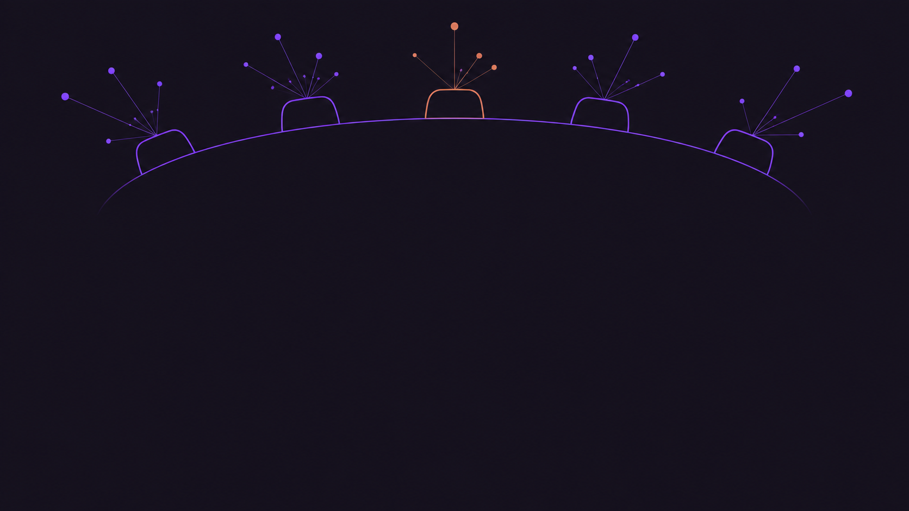
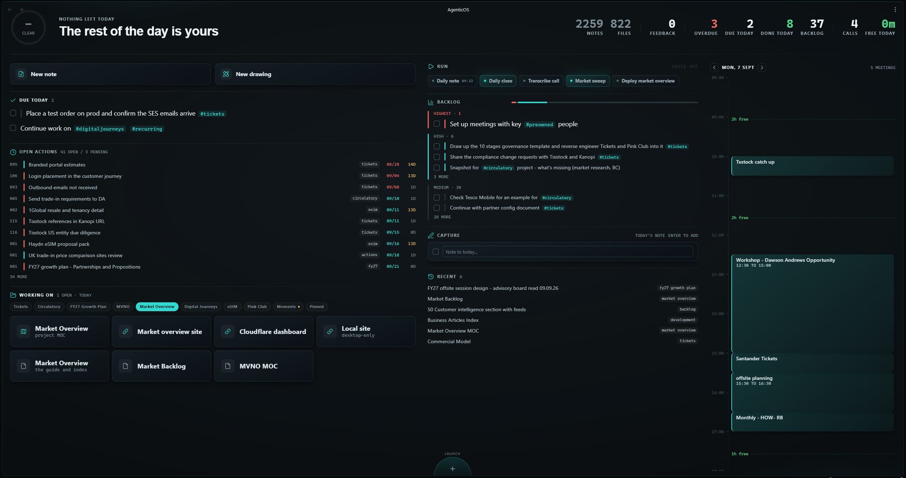

An Obsidian vault: markdown files in folders. Claude Code and Codex read and write the same files I do.
No app lock-in, no pasting context into a chatbot. We share one source of truth, and it knows more every week.
I supply judgement. They supply memory, structure and first drafts. Everything lands back in my system, in my format, ready for the next conversation.
A written procedure the agents follow. Two dozen of them, each a job I used to do by hand and now only have to name.
Written once, kept in the vault, version-controlled and validated like code. Both agents read the same copy, so improving one improves it everywhere.

Five seats, 485 clipped business articles behind them. I put a problem down and they take it in turn.
Twenty-one automated sources, one weekly pass. Nothing reaches the record until I approve it.
Triage, not coverage. Every source earns its place, because adding one mostly buys more reading. Two were cut this month on that test.
Claims get checked. A verification log records what was tested against a live source, when, and what it found, so any figure traces back to where it came from.
One sentence from a stakeholder triggers eleven stages of product discovery, on the Product Institute's methodology, each pausing for my judgement.
Every stage saves its artifact into the vault. Screen Protection alone produced 15: strategy canvas, personas, job stories, story map, roadmap. Personas reuse across initiatives, so the process compounds.
Discovery discipline I would struggle to sustain alone, in hours rather than weeks, and none of it lives in my head or a chat window.
The day ahead, what is due, what is open, the project I am in, what the agents have published, and a button to fire any skill.

Every number is read live from the files the agents write, so it cannot go stale. There is no dashboard to maintain.